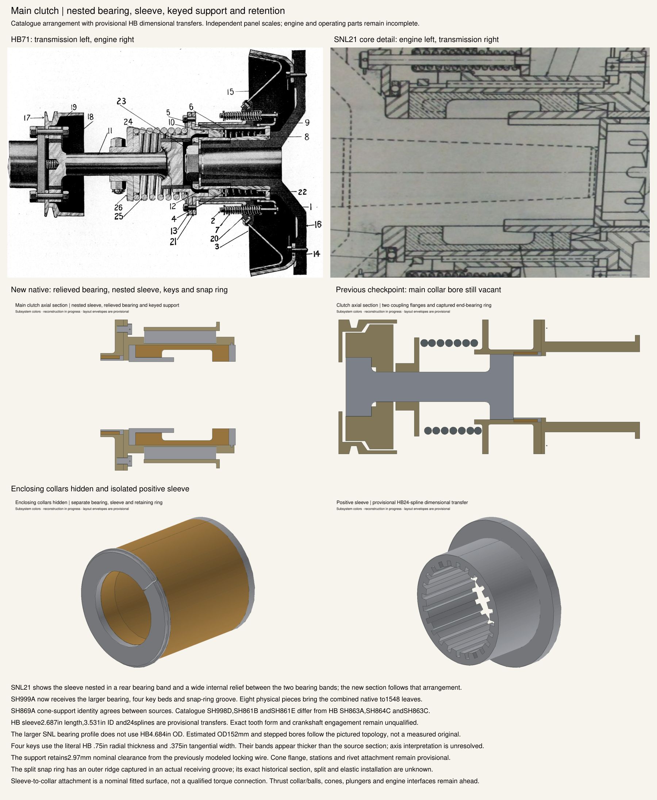

The catalogue shows a relieved bearing with a nested sleeve and an outer keyed cone support. The new and formerly empty sections are shown with independent scales. HB/SNL identities differ and literal key dimensions make thicker bands than the drawing. Cones, thrust/ball mechanism and engine interfaces remain incomplete.
